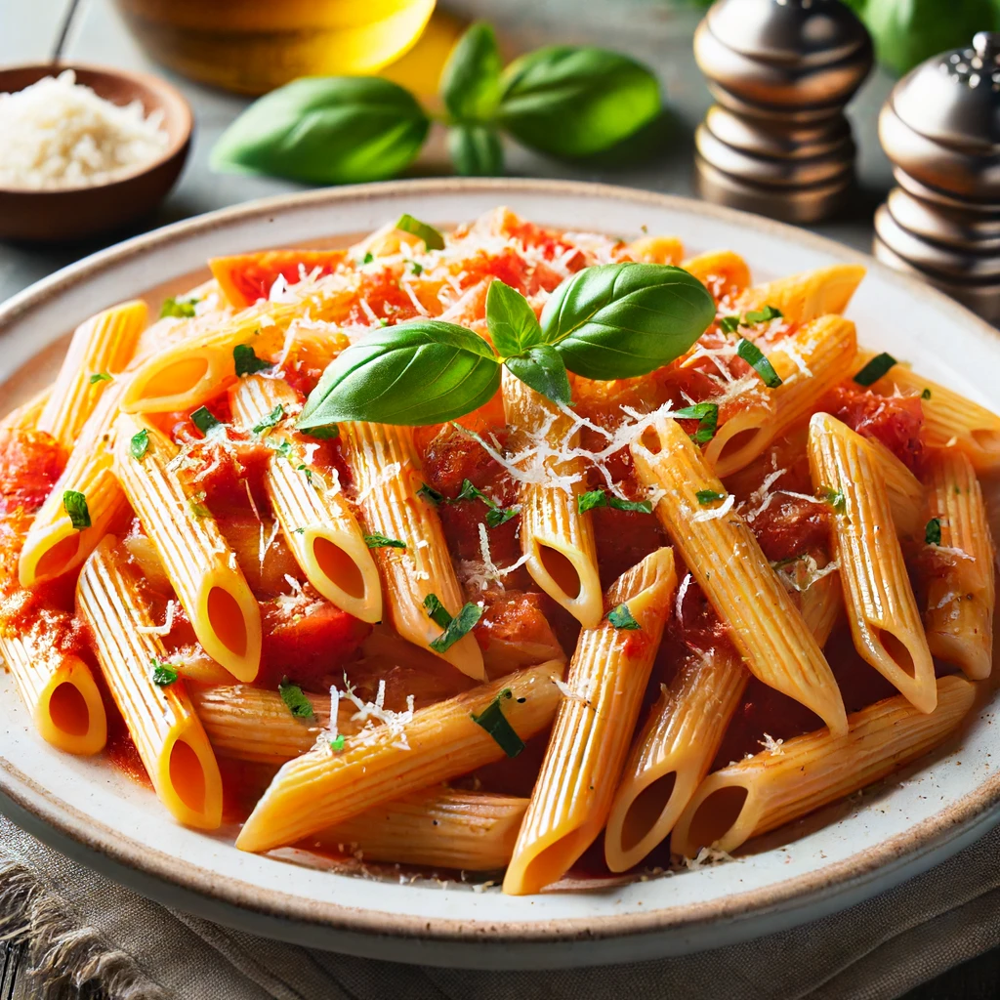

Penne alla Vodka Recipe

Penne alla Vodka is a classic Italian-American pasta dish featuring penne pasta coated in a creamy, rich tomato-vodka sauce. The sauce is made with sautéed onions and garlic, simmered with vodka, and combined with crushed tomatoes and heavy cream for a luxurious texture. The dish is typically garnished with freshly grated Parmesan cheese and fresh basil leaves, adding a burst of flavor and color. It's a comforting and indulgent meal that balances the tanginess of the tomatoes with the smoothness of the cream, making it a favorite for many pasta lovers.
Ingredients
For the Sauce
- 2 tablespoons extra virgin olive oil
- 1 small onion, finely chopped
- 2-3 cloves garlic, minced
- 1/4 teaspoon red pepper flakes (optional)
- 1/2 cup vodka
- 1 can (28 ounces) crushed tomatoes or tomato puree
- 1 cup heavy cream
- Salt and pepper to taste
- 1/2 cup grated Parmesan cheese
- Fresh basil leaves, chopped (for garnish)
For the Pasta
- 1 pound penne pasta
- Salt for the pasta water
Instructions
1. Prepare the Sauce
- In a large skillet or saucepan, heat the olive oil over medium heat.
- Add the chopped onion and cook until it becomes translucent, about 5 minutes.
- Add the minced garlic and red pepper flakes (if using) and cook for another 1-2 minutes, until fragrant.
- Carefully pour in the vodka and let it simmer for about 5-7 minutes, until it reduces by half.
- Stir in the crushed tomatoes or tomato puree and bring the mixture to a simmer. Let it cook for about 10 minutes, stirring occasionally.
- Lower the heat and stir in the heavy cream. Allow the sauce to simmer for another 5-7 minutes, until it thickens slightly.
- Season with salt and pepper to taste.
- Stir in the grated Parmesan cheese until it's fully melted and incorporated into the sauce. Keep the sauce warm on low heat.
2. Cook the Pasta
- In a large pot, bring salted water to a boil.
- Add the penne pasta and cook according to the package instructions until al dente.
- Drain the pasta, reserving about 1/2 cup of the pasta cooking water.
3. Combine and Serve
- Add the cooked penne to the sauce, tossing to coat the pasta evenly. If the sauce is too thick, add a bit of the reserved pasta water to reach the desired consistency.
- Cook the pasta and sauce together for 1-2 minutes to allow the flavors to meld.
- Serve the Penne alla Vodka in bowls, garnished with chopped fresh basil and extra grated Parmesan cheese if desired.